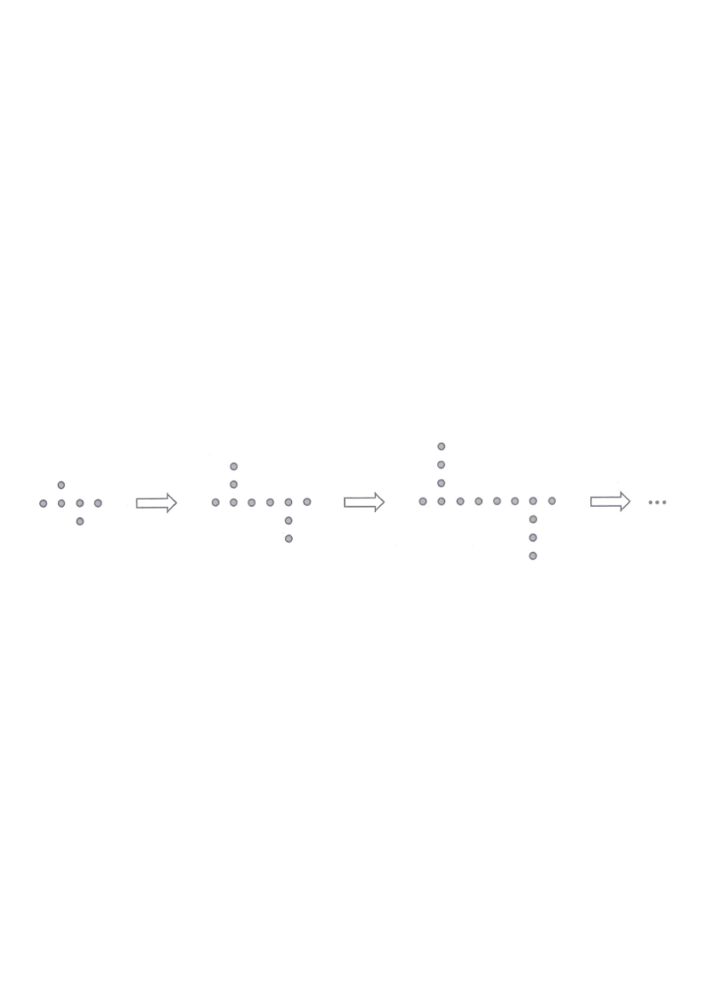

Step 1 · The given pattern: 1st pattern has 6 dots.
In the figure, the 1st pattern consists of $6$ dots. For any positive integer $n$, the $(n+1)$th pattern is formed by adding $4$ dots to the $n$th pattern. Find the number of dots in the 9th pattern.

Let $T(n)$ be the number of dots in the $n$th pattern.
Given: $T(1)=6$ and $T(n+1)=T(n)+4$ for any positive integer $n$.
Hint: this is an arithmetic sequence with first term $6$ and common difference $4$.
Apply $T(n+1)=T(n)+4$ repeatedly:
\[ \begin{aligned} T(9)&=T(8)+4\\ &=T(7)+4+4\\ &\;\;\vdots\\ &=\underbrace{T(1)+4+4+\cdots+4}_{8\ \text{times}} \end{aligned} \]
Hint: going from the 1st to the 9th pattern takes $9-1=8$ additions of 4.
\[ T(9)=6+\underbrace{4+4+4+4+4+4+4+4}_{8\ \text{terms}}=6+8\times 4 \]
(Equivalently the general term: $T(n)=6+4(n-1)$.)
Hint: a common difference of $4$ added $(n-1)$ times gives $T(n)=6+4(n-1)$.
\[ T(9)=6+8\times 4 = 6+32 = 38 \]
Hint: 8 steps of $+4$ add $32$ dots to the original $6$.
Question. The 1st pattern of a sequence consists of \(7\) dots, and each later pattern is formed by adding \(5\) dots to the previous one. Find the number of dots in the 11th pattern.